Recursive bisection
You already know how to cut a graph in two. This lab turns that one cut into k parts: split the largest part, replace it with the two halves, repeat. On the five-node graph the cut climbs 3 → 8 → 13 — and that last jump is the lesson.
Subtitles are soft — turn them on or off in the player. Also here: transcript · slides (PDF) · 中文 SRT · English SRT
What this clip covers
The situation
You own a two-way cutter; the floorplan wants four connected blocks.
The loop
While parts < k: split the largest part with your bipartitioner, replace it with the two halves.
The tradeoff
k=3 stops at cut 8; the fourth part costs +5 because D–E must be cut.
Try the three splits
Pick a target k. The graph recolours by part, the crossing edges turn red, and the readout shows the parts string and the total cut — the same goldens the lab checks.
cut 0 · one part so far, target k = 4
The three splits
| k | parts | cut | what happened |
|---|---|---|---|
| 2 | ABC|DE | 3 | first bipartition on the whole graph; C–D (2) and C–E (1) cross |
| 3 | AB|C|DE | 8 | largest part ABC is split; A–B (5) stays inside, C leaves |
| 4 | AB|C|D|E | 13 | DE is split; the weight-5 D–E edge joins the cut |
Slides

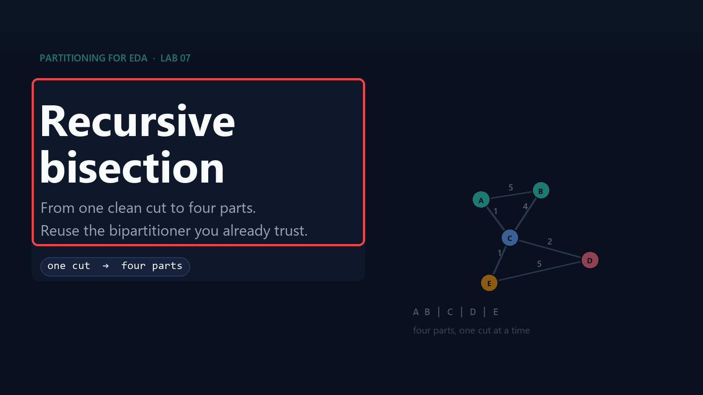

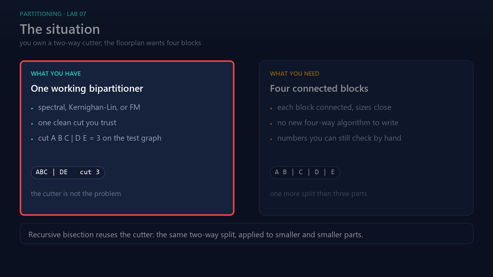

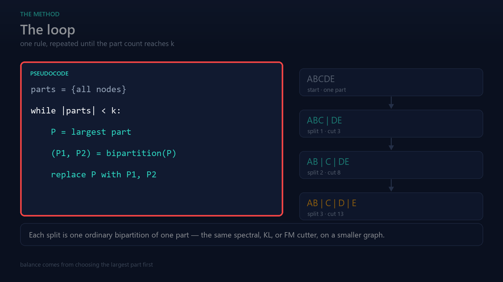

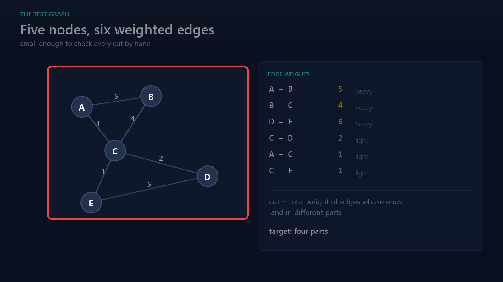

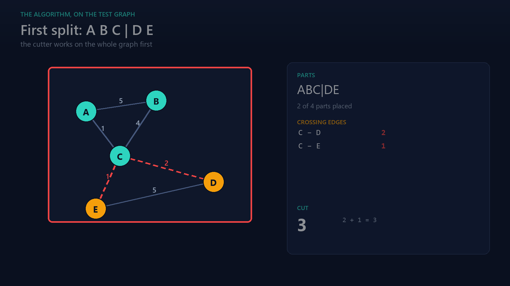


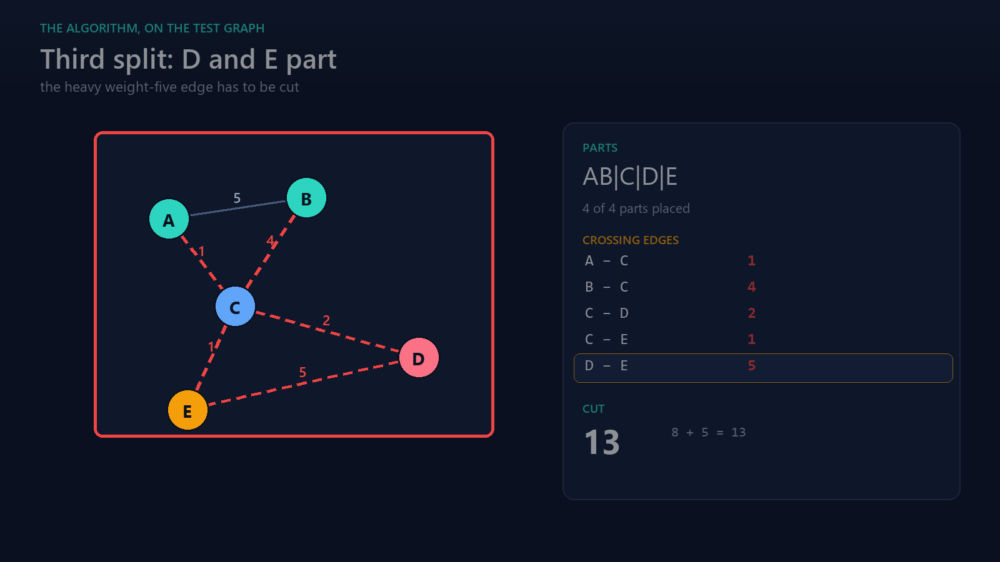

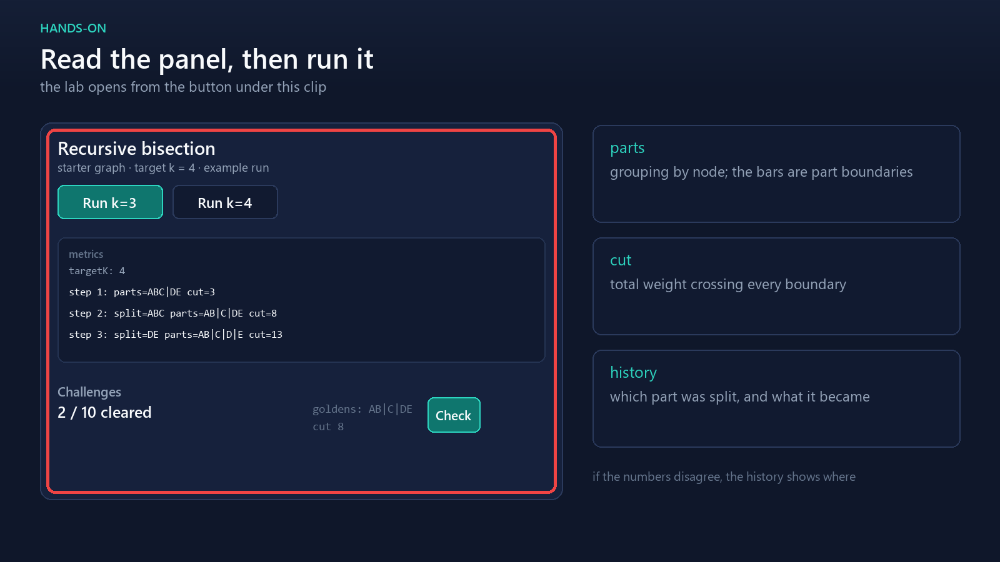

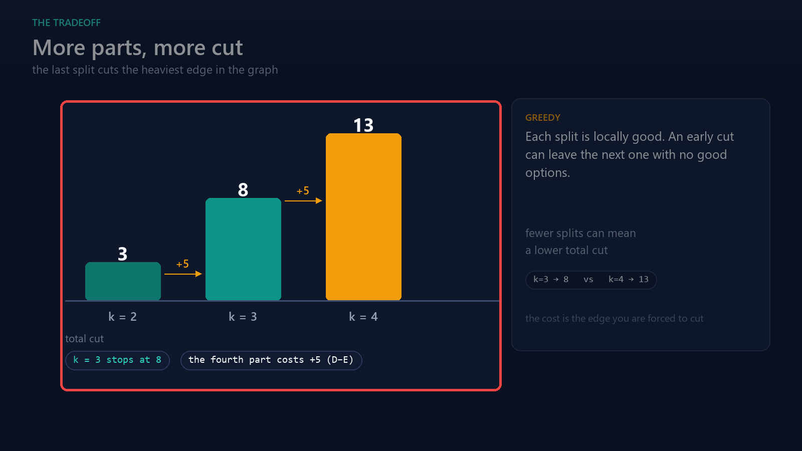

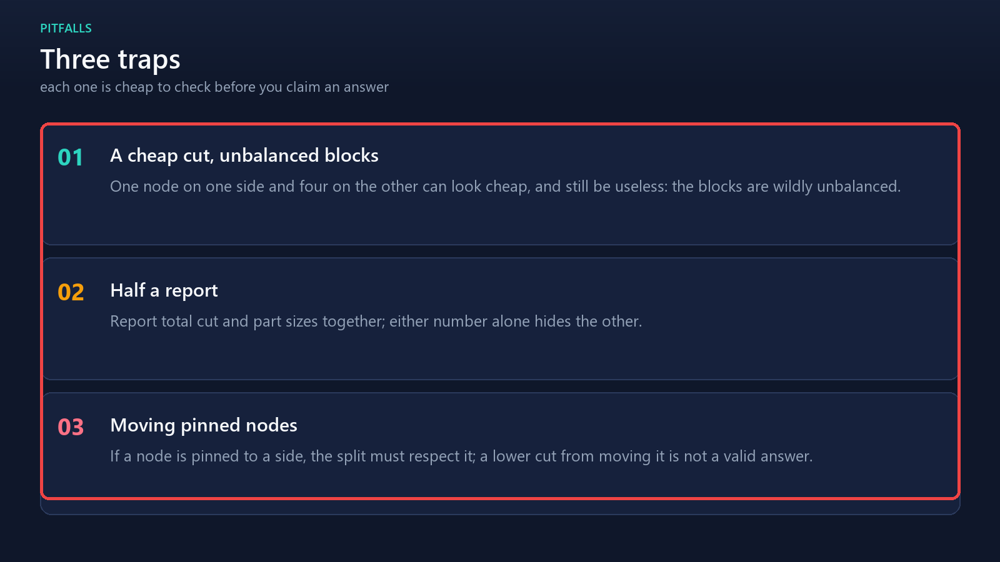

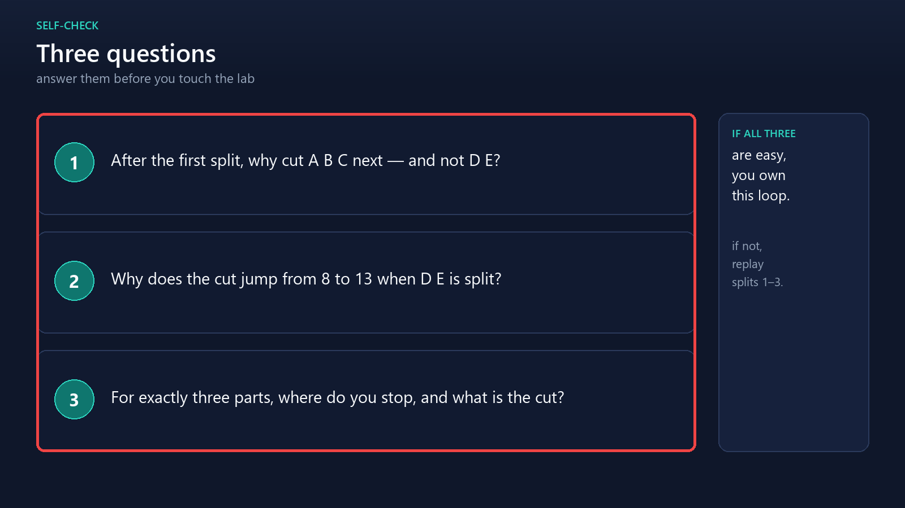

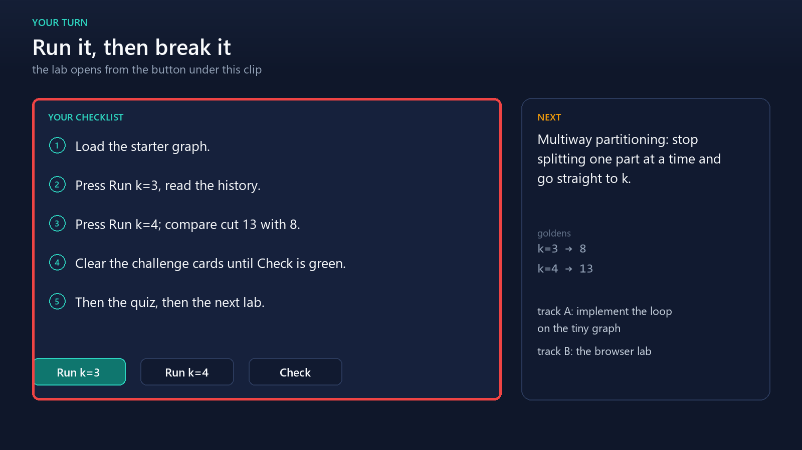
Check yourself
Transcript
Full narration, slide by slide
Slide 1 — Recursive bisection
This is lab seven of partitioning for EDA: recursive bisection.
You already know how to cut a graph in two.
This lesson turns that one cut into as many parts as you need.
The same cutter, used again on smaller and smaller pieces.
Slide 2 — The situation
Start with the situation. Your bipartitioner works: spectral, Kernighan-Lin, or Fiduccia-Mattheyses.
It hands you one clean cut, and you trust it.
Now the floorplan needs four regions, and each region has to be a connected block.
A true four-way method means new code, new tuning, and new ways to be wrong.
Recursive bisection avoids all of that, because it reuses the two-way cutter you already have.
Slide 3 — The loop
The algorithm is one loop, and the loop is short.
While you have fewer than k parts, take the largest part.
Run your bipartitioner on that part alone, and replace it with the two halves it returns.
Two details carry the method: always split the largest part, and never cut across parts you have already finished.
Splitting the largest part keeps the sizes close, and close sizes are what balance means here.
Slide 4 — The test graph
Let us run it on a graph small enough to check by hand.
Five nodes, A to E, with weighted edges.
The heavy edges are A to B with weight five, B to C with weight four, and D to E, also five.
The light edges are A to C and C to E, weight one each, and C to D, weight two.
Cut is the total weight of edges whose ends land in different parts, and today the target is four parts.
Slide 5 — First split: A B C against D E
The first split happens on the whole graph.
The bipartitioner puts A, B, and C on one side, and D and E on the other.
Only two edges cross: C to D, weight two, and C to E, weight one.
So the cut is three.
That is two parts, and we asked for four, so the loop continues.
Slide 6 — Second split: A B C becomes A B and C
Next, we take the largest part.
A B C holds three nodes, and D E holds two.
So A B C is the part we split, and the split happens inside it only.
A and B share the weight-five edge, so they stay together, and C goes its own way.
Now the parts are A B, C, and D E, and the cut rises to eight.
Slide 7 — Third split: D E becomes D and E
Three parts, one more to go.
The largest remaining part is D E, so we split it.
This is where it hurts: D and E are joined by an edge of weight five.
Separating them adds that five to the cut, which brings the total to thirteen.
Four parts: A B, C, D, and E.
Slide 8 — Reading the lab panel
Before you run it yourself, know what to read on the lab panel.
The parts string groups the nodes: A B, then C, then D E, and the bars are the boundaries.
The cut number is the total weight across every boundary.
The history lists each split in order, so you can see which part was chosen and what it became.
If your numbers disagree with the ones on the panel, open the history: the first split is usually where it went wrong.
Slide 9 — The tradeoff
Compare the three cuts.
Stopping at three parts gives a cut of eight.
Going on to four parts costs thirteen, because the last split cuts the heaviest edge in the graph.
More parts is not automatically better.
Recursive bisection is greedy: every split looks good on its own, but an early decision can leave the next one with no good options.
Slide 10 — Three traps
Three traps to watch when you run it.
Trap one: a cheap cut is not automatically a good partition.
One node on one side and four on the other can look cheap and still be useless.
Trap two: report the total cut and the part sizes together, because either number alone tells half the story.
Trap three: if a node is pinned to a side, the split has to respect that, so a lower cut that moves a pinned node is not a valid answer.
Slide 11 — Check yourself
Before you open the lab, three questions.
One: after the first split, why do we cut A B C next, and not D E?
Two: why does the cut jump from eight to thirteen when we split D E?
Three: if you wanted exactly three parts, where would you stop, and what would the cut be?
Answer those without scrolling back, and you have the idea.
Slide 12 — Your turn
Your turn. The lab is linked right under this clip.
Load the starter graph, press the Run k equals three button, then the Run k equals four button, and watch the history fill in.
Work the challenge cards until Check turns them green.
Do one track on the checklist: the browser lab, or the coding track.
Do both, if you have time.
Then do the short quiz, and in the next lesson we stop splitting one part at a time and go straight to k parts.